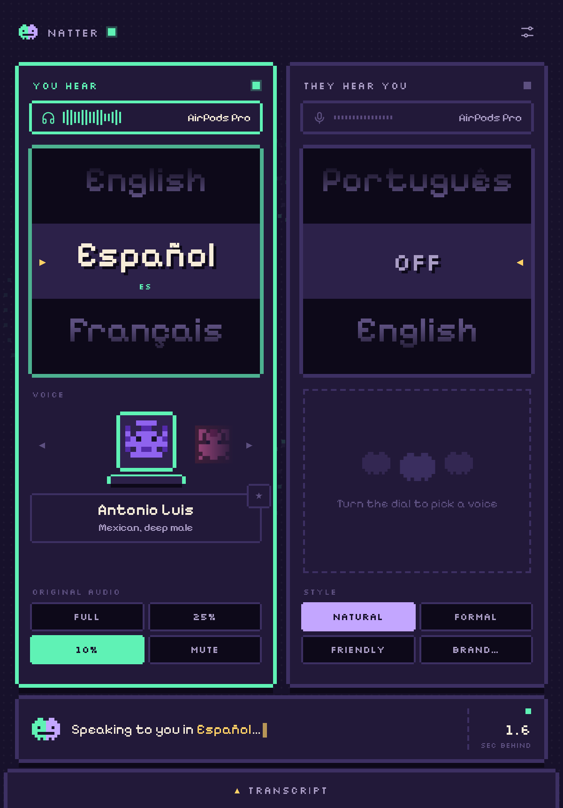

Turn a dial and anything your Mac plays (a call, a stream, a video, a meeting) is spoken into your ears in your language. Turn the other and the people on your call hear you in theirs. Live, in any app.
FREE · OPEN SOURCE (MIT) · macOS 14.4+ · APPLE SILICON · BRING YOUR OWN ASSEMBLYAI KEY
Natter sits between your Mac and your ears, and between your mic and your call. Nothing to install on the other side.
Zoom, Meet, Teams, Slack huddles. Natter shows up as your microphone, so the other side just hears you in their language.
Softphones, WhatsApp desktop, browser dialers. Anything that plays through your Mac.
Dub a livestream or a video as it plays, with the original turned down to 10% underneath.
Every speaker gets their own critter voice, so you always know who's talking.
Give every agent Natter and a brand voice, and take calls in languages nobody on the team speaks.
One Python file, a local API and an editable prompt. Make it summarise, simplify, or speak like a pirate.
Natter doesn't just translate words. Pick how you come across in their language: natural, formal, friendly, or your own brand voice, with the words to use and avoid and your product names kept exact. It never changes what you mean.
Perfect for support teams and anyone selling across borders: every call sounds on-brand and properly local, not machine-translated.
Built on AssemblyAI's speech AI. Usage is billed to your own key, and your key stays in your Mac's Keychain.
You'll need an AssemblyAI API key.
Open Natter.dmg and drag Natter to Applications. The first time, macOS may say it can't check the app: open System Settings → Privacy & Security → Open Anyway.
Natter asks for your AssemblyAI key on first launch and keeps it in your Keychain. Allow microphone and system audio when asked.
That's it. To talk on calls, add the free BlackHole driver once: brew install blackhole-2ch blackhole-16ch.
Natter is MIT-licensed. Read the code, change the prompt, add voices, or build something new on its local API.